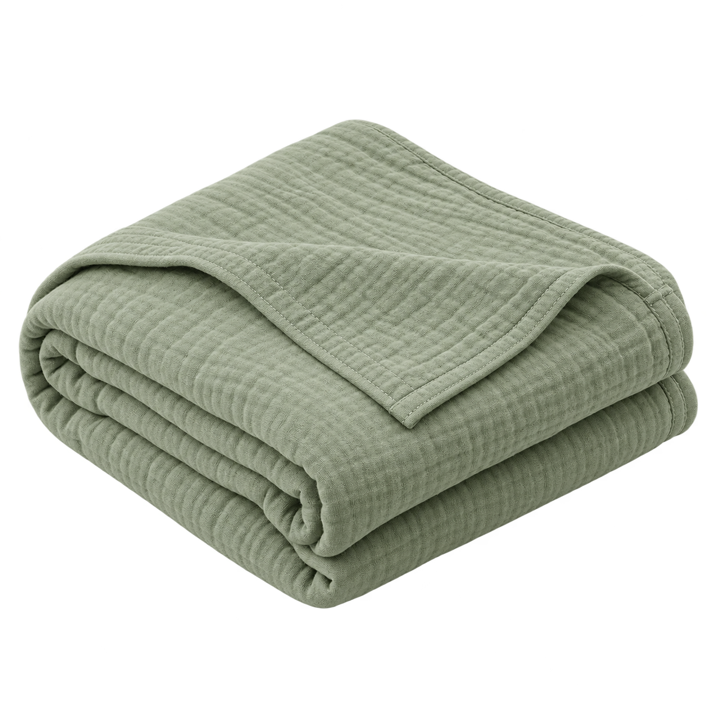

一件产品，一组素材。
从产品原图开始，生成、审核，再交到运营手里。
产品与原图
01 / 输入
白底图上传后会保留原背景
这次做些什么
02 / 配方鼠尾草绿 · 米白 · 浅木纹；场景图片需人工复核。
本地规则匹配，未接向量检索或在线大模型。本次生产任务 0
准备好后，生成第一组素材。
点击「生成素材」，得到可预览、可审核、可下载的真实图片。
审核与素材库
只把已确认的图片交付出去，每张图都能追溯到原始输入。
还没有素材，请先到「素材生产」生成一组。
把通过的图片，剪成一支短片。
3 个镜头 · 15 秒 · 9:16 · 无声动效剪辑
使用已通过素材做推近和转场，未调用视频生成模型。
另附约 10 秒横版亲子互动广告样片，可下载查看。
至少通过 3 张图片后可制作。
下载本次视频 ↓下载亲子互动 MP4 样片 ↓审核后生成短片
把调性写成可复用的规则。
修改品牌文案和色彩后，再次生成即可得到新版本素材。
品牌配置
THE BRAND PALETTE
Quiet by nature.
Soft by design.
规范与来源会写入每次导出的 manifest.json。当前样例采用本地规则检索；正式项目可将这一层替换为有来源引用的 RAG。
这个样例实际做了什么
可操作、可导出，也保留清晰的能力范围。
已经可以操作
上传产品原图、编辑品牌规范、选择三种模板和尺寸、批量合成 PNG、逐张预览、人工通过或退回、重做被退回素材、导出含图片和溯源信息的 ZIP，以及从通过的图片制作 15 秒动效视频。
素材与执行方式
棉纱毯原图、北欧底图，以及基于这两张参考图生成的生活场景，由本次 AI 图像生成工具预先生成，品牌与商品均为虚构示例。网页中的批量操作采用 Canvas 本地合成，会实际生成文件。品牌资料使用本地关键词规则匹配，视频使用浏览器录制或本地 FFmpeg 剪辑。页面展示的亲子互动广告为独立提供成片。
正式接入时的替换点
把预生成底图替换为图片模型 API，把本地规则匹配替换为品牌知识库检索，把本地任务状态接入持久队列；视频生成、模型费用结算、用户权限、多 SKU 适配及目标市场合规验证在正式实施时另行完成。
商品一致性检查
白底与社媒模板复用同一份商品原图；默认场景采用预先生成的 AI 参考样图，商品折叠形态可能有变化，必须人工核对。上传自己的产品后，场景模板改为原图与底图的本地合成。背景透视、接触阴影、细节边缘和目标渠道规范仍需运营审核；样例素材不代表真实商品拍摄或平台审核通过。
数据与交付
页面状态保存在当前标签页内，刷新会清空。产品图不会被发送至第三方模型服务。ZIP 包包含已通过的 PNG、品牌配置、产品输入、规则来源、提示词、分镜信息与已制作的视频。
下载本次 AI 底图提示词与来源 ↓